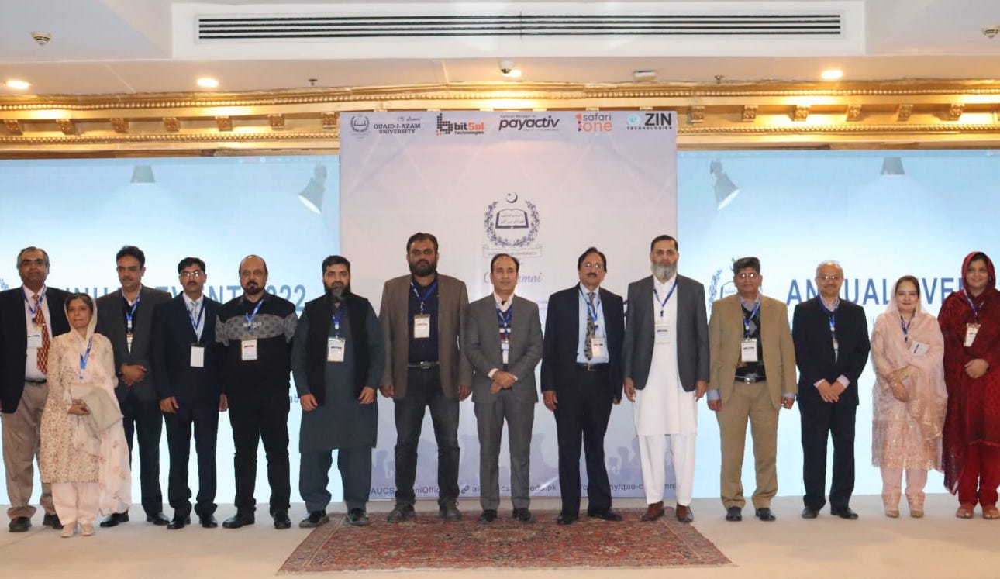
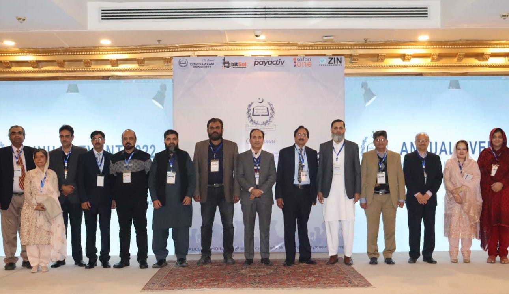
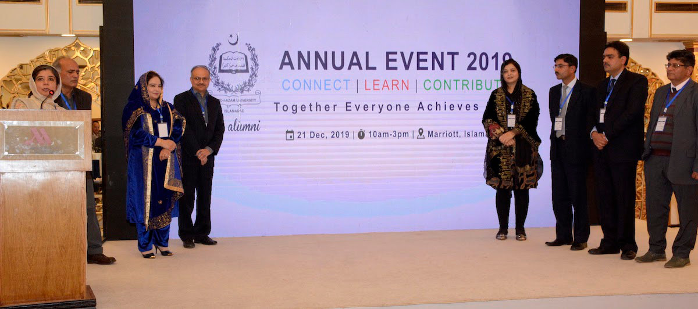
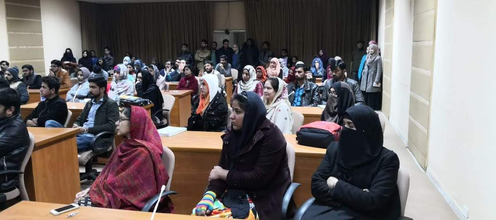
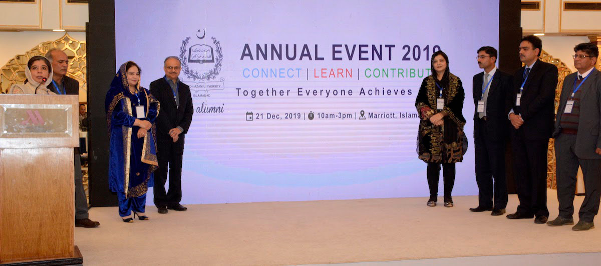
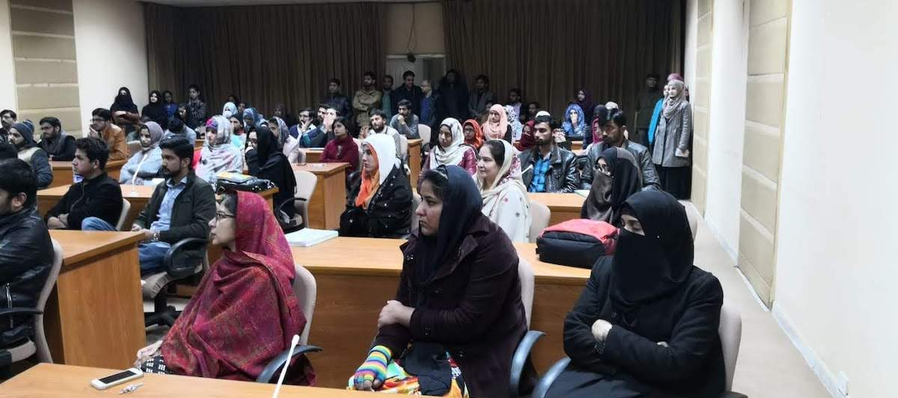
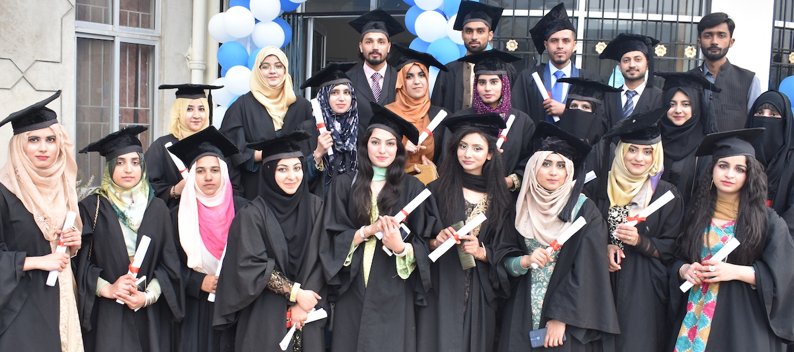
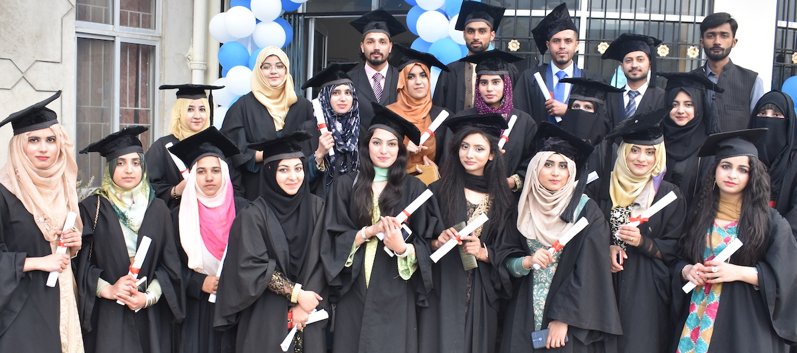

Department of Computer Sciences
Quaid-i-Azam University, Islamabad
INTRODUCTION
The Department of Computer Sciences at Quaid-i-Azam University is considered as one of the best computer science departments in Pakistan. All the programs have been highly successful. Department graduates have attained higher degrees from developed countries and are working in national and international organizations. The department offers PhD (Computer Science), MPhil (Computer Science), MS (Information Science & Technology), MS (Data Science), and BS (Computer Science) degrees. Each degree program has a specific objective and focus. The course of study and syllabus for each degree is updated and is inline with its objectives.

 

 




 



Research

Human Information Interaction
Investigates all aspects of information usage by humans. Research focus varies for information seeking behavior, Information Interaction Techniques, Storage and Retrieval models/frameworks for structured and unstructured information, and information services for human information needs.

Knowledge Engineering
Focuses on analyze of data, metadata and knowledge using supervised and unsupervised mining algorithms. The target areas will be software architecture, web services and overlay networks. The main goal is to process related and uncorrelated facts and extract meaningful contextual knowledge for quality decision making.

Networking and Communication
This group investigates the applied aspects in the domains of networking, communication, security and privacy. The research group focuses on a number of areas including but not limited to computer networks, distributed systems, mobile Agent-based distributed systems, routing protocols, peer-to-peer computing, security and privacy.